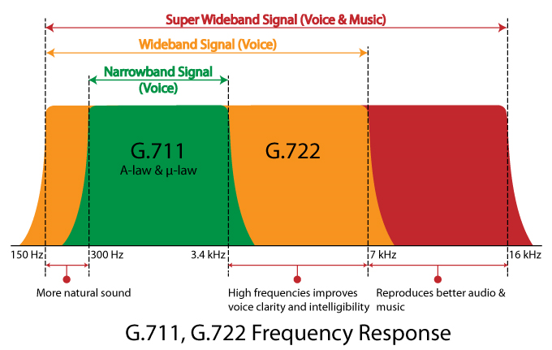
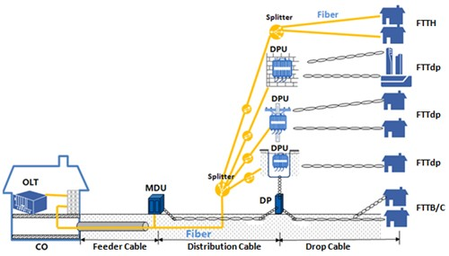
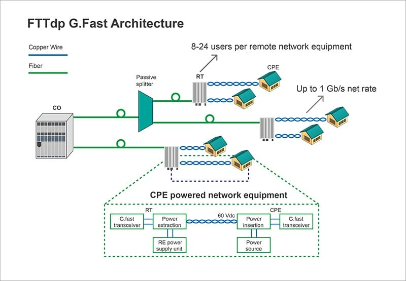
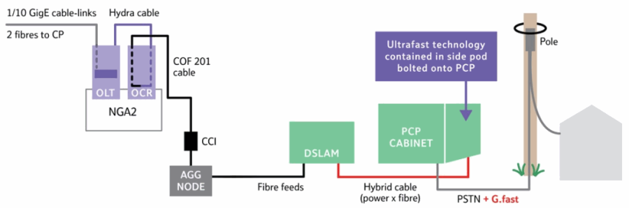
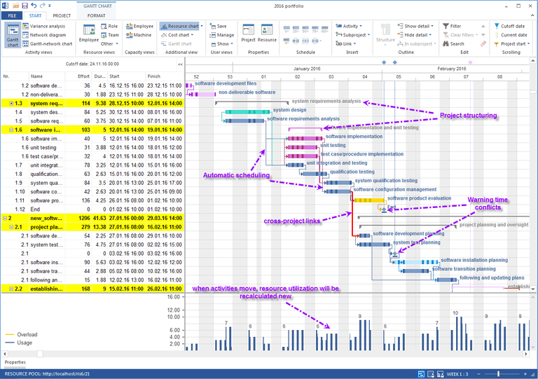
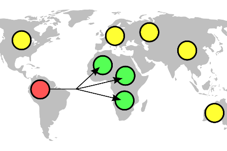
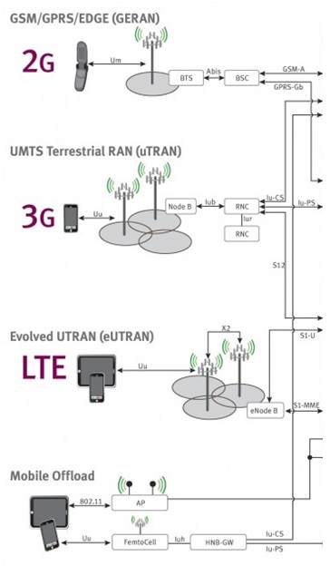
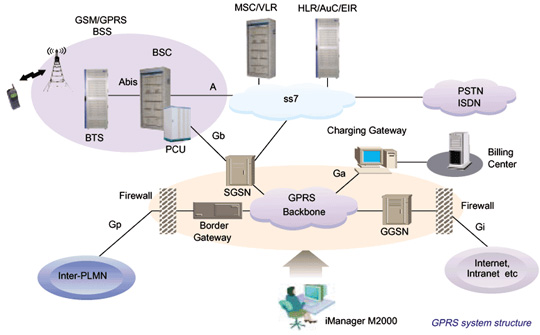

G.711 |
| G.711 is an ITU-T standard for audio companding. It is primarily used in telephony. The standard was released for usage in 1972. Its formal name is Pulse code modulation (PCM) of voice frequencies. It is a required standard in many technologies, for example in H.320 and H.323 specifications. It can also be used for fax communication over IP networks (as defined in T.38 specification). G.711, also known as Pulse Code Modulation (PCM), is a very commonly used waveform codec. G.711 is a narrowband audio codec that provides toll-quality audio at 64 kbit/s. G.711 passes audio signals in the range of 300–3400 Hz and samples them at the rate of 8,000 samples per second, with the tolerance on that rate of 50 parts per million (ppm). Non-uniform (logarithmic) quantization with 8 bits is used to represent each sample, resulting in a 64 kbit/s bit rate. There are two slightly different versions: μ-law, which is used primarily in North America and Japan, and A-law, which is in use in most other countries outside North America.
Two enhancements to G.711 have been published: G.711.0 utilizes lossless data compression to reduce the bandwidth usage and G.711.1 increases audio quality by increasing bandwidth.
Types
G.711 defines two main companding algorithms, the µ-law algorithm and A-law algorithm. Both are logarithmic, but A-law was specifically designed to be simpler for a computer to process. The standard also defines a sequence of repeating code values which defines the power level of 0 dB.
The µ-law and A-law algorithms encode 14-bit and 13-bit signed linear PCM samples (respectively) to logarithmic 8-bit samples. Thus, the G.711 encoder will create a 64 kbit/s bitstream for a signal sampled at 8 kHz.
G.711 μ-law tends to give more resolution to higher range signals while G.711 A-law provides more quantization levels at lower signal levels.

|
G.711.1 |
| G.711.1 is an extension to G.711, published as ITU-T Recommendation G.711.1 in March 2008. Its formal name is Wideband embedded extension for G.711 pulse code modulation.
G.711.1, allows the addition of narrowband and/or wideband (16000 samples/s) enhancements, each at 25% of the bitrate of the (included) base G.711 bitstream, leading to data rates of 64, 80 or 96 kbit/s.
G.711.1 is compatible with G.711 at 64 kbit/s, hence an efficient deployment in existing G.711-based voice over IP (VoIP) infrastructures is foreseen. The G.711.1 coder can encode signals at 16 kHz with a bandwidth of 50–7000 Hz at 80 and 96 kbit/s, and for 8-kHz sampling the output may produce signals with a bandwidth ranging from 50 up to 4000 Hz, operating at 64 and 80 kbit/s.
The G.711.1 encoder creates an embedded bitstream structured in three layers corresponding to three available bit rates: 64, 80 and 96 kbit/s. The bitstream does not contain any information on which layers are contained, an implementation would require outband signalling on which layers are available. The three G.711.1 layers are: log companded pulse code modulation (PCM) of the lower band including noise feedback, embedded PCM extension with adaptive bit allocation for enhancing the quality of the base layer in the lower band, and weighted vector quantization coding of the higher band based on modified discrete cosine transformation (MDCT).
Two extensions for G.711.1 are planned in 2010: superwideband extension (bandwidth to 14000 Hz) and lossless bitstream compression. |
G.719 |
| G.719 is an ITU-T standard audio coding format providing high quality, moderate bit rate (32 to 128 kbit/s) wideband (20 Hz - 20 kHz audio bandwidth, 48 kHz audio sample rate) audio coding at low computational load. It was produced through a collaboration between Polycom and Ericsson.
G.719 incorporates elements of Polycom's Siren22 codec (22 kHz) and Ericsson codec technology, as well as Polycom's Siren7 and Siren14 codecs (G.722.1 and G.722.1 Annex C), which have been used in videoconferencing systems for many years. As ITU-T Recommendation G.719, it was approved on June 13, 2008.
G.719 is optimized for both speech and music. It is based on transform coding with adaptive time-resolution, adaptive bit-allocation and low complexity lattice vector quantization. The computational complexity is quite low (18 floating-point MIPS) for an efficient high-quality compressor. The codec operates on 20 ms frames, and the algorithmic delay end-to-end is 40 ms. The encoder input and decoder output are sampled at 48 kHz.
In addition to the nominal bit rates of 32, 48 and 64 kbit/s, the G.719 codec has an inherent feature of flexible rate selection. In fact, it is possible to accommodate any rate between 32 kbit/s and 64 kbit/s by steps of 4 kbit/s. Moreover, the codec can also provide higher rates than 64 kbit/s and up to 128 kbit/s. |
G.722 |
| G.722 is an ITU-T standard 7 kHz Wideband audio codec operating at 48, 56 and 64 kbit/s. It was approved by ITU-T in November 1988. Technology of the codec is based on sub-band ADPCM (SB-ADPCM).
G722 provides improved speech quality due to a wider speech bandwidth of 50–7000 Hz compared to narrowband speech coders like G.711 which in general are optimized for POTS wireline quality of 300–3400 Hz. G.722 sample audio data at a rate of 16 kHz (using 14 bits), double that of traditional telephony interfaces, which results in superior audio quality and clarity.[2]
Other ITU-T 7 kHz wideband codecs include G.722.1 and G.722.2. These codecs are not variants of G.722 and they use different patented compression technologies. G.722.1 is based on Siren codecs and offers lower bit-rate compressions (24 kbit/s or 32 kbit/s). A more recent G.722.2, also known as AMR-WB ("Adaptive Multirate Wideband") is based on ACELP and offers even lower bit-rate compressions (6.6 kbit/s to 23.85 kbit/s), as well as the ability to quickly adapt to varying compressions as the network topography mutates. In the latter case, bandwidth is automatically conserved when network congestion is high. When congestion returns to a normal level, a lower-compression, higher-quality bitrate is restored.
|
G.723.1 |
| G.723.1 is an audio codec for voice that compresses voice audio in 30 ms frames. An algorithmic look-ahead of 7.5 ms duration means that total algorithmic delay is 37.5 ms. Its official name is Dual rate speech coder for multimedia communications transmitting at 5.3 and 6.3 kbit/s. It is sometimes associated with a Truespeech trademark in coprocessors produced by DSP Group.[1]
This is a completely different codec from G.723.
There are two bit rates at which G.723.1 can operate:
6.3 kbit/s (using 24 byte frames) using a MPC-MLQ algorithm (MOS 3.9)
5.3 kbit/s (using 20 byte frames) using an ACELP algorithm (MOS 3.62) |
G.726 |
| G.726 is an ITU-T ADPCM speech codec standard covering the transmission of voice at rates of 16, 24, 32, and 40 kbit/s. It was introduced to supersede both G.721, which covered ADPCM at 32 kbit/s, and G.723, which described ADPCM for 24 and 40 kbit/s. G.726 also introduced a new 16 kbit/s rate. The four bit rates associated with G.726 are often referred to by the bit size of a sample, which are 2, 3, 4, and 5-bits respectively.
The most commonly used mode is 32 kbit/s, which doubles the usable network capacity by using half the rate of G.711. It is primarily used on international trunks in the phone network and is the standard codec used in DECT wireless phone systems. The principal application of 24 and 16 kbit/s channels is for overload channels carrying voice in digital circuit multiplication equipment (DCME). The principal application of 40 kbit/s channels is to carry data modem signals in DCME, especially for modems operating at greater than 4800 bit/s. |
G.729 |
|
|
G.Fast |
| G.fast is a digital subscriber line (DSL) protocol standard for local loops shorter than 500 m, with performance targets between 100 Mbit/s and 1 Gbit/s, depending on loop length. High speeds are only achieved over very short loops. Although G.fast was initially designed for loops shorter than 250 meters, Sckipio in early 2015 demonstrated G.fast delivering speeds over 100 Mbit/s nearly 500 meters and the EU announced a research project.[
Formal specifications have been published as ITU-T G.9700 and G.9701, with approval of G.9700 granted in April 2014 and approval of G.9701 granted on December 5, 2014. Development was coordinated with the Broadband Forum's FTTdp (fiber to the distribution point) project.
The letter G in G.fast stands for the ITU-T G series of recommendations; fast is an acronym for fast access to subscriber terminals. Limited demonstration hardware was demonstrated in mid-2013. The first chipsets were introduced in October 2014, with commercial hardware introduced in 2015, and first deployments started in 2016.



|
Gantt chart |
| a horizontal bar chart frequently used in project management that provides a graphical illustration of a schedule that helps to plan, coordinate, and track specific tasks in a project.

|
gap analysis |
| the study of the differences between two different information systems or applications, often for the purpose of determining how to get from one state to a new state. Sometimes spoken of as "the space between where we are and where we want to be." |
Gate |
| A set of defined criteria that must be completed for an artifact or even to be complete, or to allow a process or workflow to move from one phase to the next. |
Gate Checklist |
| A special checklist type that defines and supports verification of a gate. |
GBE / GE | Gigabit Ethernet |
|
GCHQ | Government Communications Headquarters | The Government Communications Headquarters (GCHQ) is an intelligence and security organisation responsible for providing signals intelligence (SIGINT) and information assurance to the government and armed forces of the United Kingdom. Based in "The Doughnut" in the suburbs of Cheltenham, GCHQ is the responsibility of the country's Secretary of State for Foreign and Commonwealth Affairs, but it is not a part of the Foreign Office and its director ranks as a Permanent Secretary.
GCHQ was originally established after the First World War as the Government Code and Cypher School (GC&CS) and was known under that name until 1946. During the Second World War it was located at Bletchley Park, where it was responsible for breaking of the German Enigma codes. Currently there are two main components of the GCHQ, the Composite Signals Organisation (CSO), which is responsible for gathering information, and the National Cyber Security Centre (NCSC), which is responsible for securing the UK's own communications. The Joint Technical Language Service (JTLS) is a small department and cross-government resource responsible for mainly technical language support and translation and interpreting services across government departments. It is co-located with GCHQ for administrative purposes. |
Geocast |
| Geocast refers to the delivery of information to a group of destinations in a network identified by their geographical locations. It is a specialized form of multicast addressing used by some routing protocols for mobile ad hoc networks.

|
GERAN |
| GERAN is an abbreviation for GSM EDGE Radio Access Network. The standards for GERAN are maintained by the 3GPP (Third Generation Partnership Project). GERAN is a key part of GSM, and also of combined UMTS/GSM networks.
GERAN is the radio part of GSM/EDGE together with the network that joins the base stations (the Ater and Abis interfaces) and the base station controllers (A interfaces, etc.) The network represents the core of a GSM network, through which phone calls and packet data are routed from and to the PSTN and Internet to and from subscriber handsets. A mobile phone operator's network comprises one or more GERANs, coupled with UTRANs in the case of a UMTS/GSM network.
A GERAN without EDGE is a GRAN, but is otherwise identical in concept.
A GERAN without GSM is an ERAN.

|
GGSN | Gateway GPRS support node | The gateway GPRS support node (GGSN) is a main component of the GPRS network. The GGSN is responsible for the internetworking between the GPRS network and external packet switched networks, such as the Internet or an X.25 network.
From an external network's point of view, the GGSN is a router to a "sub-network", because the GGSN 'hides' the GPRS infrastructure from the external network. When the GGSN receives data addressed to a specific user, it checks if the user is active. If it is, the GGSN forwards the data to the SGSN serving the mobile user, but if the mobile user is inactive, the data is discarded. In the other direction, mobile-originated packets are routed to the right network by the GGSN.
The GGSN is the anchor point that enables the mobility of the user terminal in the GPRS/UMTS networks. In essence, it carries out the role in GPRS equivalent to the home agent in Mobile IP. It maintains routing necessary to tunnel the protocol data units (PDUs) to the SGSN that services a particular MS (mobile station).
The GGSN converts the GPRS packets coming from the SGSN into the appropriate packet data protocol (PDP) format (e.g., IP or X.25) and sends them out on the corresponding packet data network. In the other direction, PDP addresses of incoming data packets are converted to the GSM address of the destination user. The readdressed packets are sent to the responsible SGSN. For this purpose, the GGSN stores the current SGSN address of the user and his or her profile in its location register. The GGSN is responsible for IP address assignment and is the default router for the connected user equipment (UE). The GGSN also performs authentication and charging functions.
Other functions include subscriber screening, IP pool management and address mapping, QoS and PDP context enforcement.
With LTE scenario the GGSN functionality moves to SAE gateway (with SGSN functionality working in MME).

|
Gherkin | | Gherkin is a language that developers use to define tests. Since this language uses plain English, it’s meant to describe use cases for a software system in a way that can be read and understood by almost anyone. This syntax promotes behavior-driven development (BDD) because it allows developers, managers, business analysts and other parties involved to understand the requirements of the project and the life-cycle. The language makes it easy to create simple documentation of the code that’s being written. Gherkin also provides scripts for test automation and supports dozens of languages. The primary keywords are: Feature
Rule (as of Gherkin 6)
Example (or Scenario)
Given, When, Then, And, But for steps (or *)
Background
Scenario Outline (or Scenario Template)
Examples (or Scenarios)
Feature: Guess the word
# The first example has two steps
Scenario: Maker starts a game
When the Maker starts a game
Then the Maker waits for a Breaker to join
# The second example has three steps
Scenario: Breaker joins a game
Given the Maker has started a game with the word "silky"
When the Breaker joins the Maker's game
Then the Breaker must guess a word with 5 characters
Feature: Calculator
Calculator for adding two numbers
@mytag
Scenario: Add two numbers
Add two numbers with the calculator
Given I have entered <First> into the calculator
And I have entered <Second> into the calculator
When I press add
Then the result should be <Result> on the screen
Examples:
| First | Second | Result |
| 50 | 70 | 120 |
| 30 | 40 | 70 |
| 60 | 30 | 90 |
|
Gigabit Ethernet |
| In computer networking, Gigabit Ethernet (GbE or 1 GigE) is the various technologies for transmitting Ethernet frames at a rate of a gigabit per second (1,000,000,000 bits per second), as defined by the IEEE 802.3-2008 standard. It came into use beginning in 1999, gradually supplanting Fast Ethernet in wired local networks, as a result of being considerably faster. The cables and equipment are very similar to previous standards and have been very common and economical since 2010.
|
Git |
| Git is a version control system for tracking changes in computer files and coordinating work on those files among multiple people. It is primarily used for source code management in software development, but it can be used to keep track of changes in any set of files. As a distributed revision control system, it is aimed at speed, data integrity, and support for distributed, non-linear workflows.
Git was created by Linus Torvalds in 2005 for development of the Linux kernel, with other kernel developers contributing to its initial development. Its current maintainer since 2005 is Junio Hamano.
As with most other distributed version control systems, and unlike most client–server systems, every Git directory on every computer is a full-fledged repository with complete history and full version tracking abilities, independent of network access or a central server. |
Given When Then |
| The Given-When-Then formula is a template intended to guide the writing of acceptance tests for a User Story: (Given) some context, (When) some action is carried out, (Then) a particular set of observable consequences should obtain. |
GMSC | Gateway Mobile Switching Centre | The Gateway Mobile Switching Centre (GMSC) is a special kind of MSC that is used to route calls outside the mobile network. Whenever a call for a mobile subscriber comes from outside the mobile network, or the subscriber wants to make a call to somebody outside the mobile network the call is routed through the GMSC.
In practice, the GMSC is just a function that can be part of a MSC. |
GNU |
| GNU is an operating system and an extensive collection of computer software. GNU is composed wholly of free software, most of which is licensed under the GNU Project's own General Public License (GPL).
GNU is a recursive acronym for "GNU's Not Unix!", chosen because GNU's design is Unix-like, but differs from Unix by being free software and containing no Unix code.The GNU project includes an operating system kernel, GNU HURD, which was the original focus of the Free Software Foundation (FSF). However, non-GNU kernels, most famously Linux, can also be used with GNU software; as the Hurd kernel is not yet production-ready,[20] this is how the GNU system is usually used.The combination of GNU software and the Linux kernel is commonly known as Linux (or less frequently GNU/Linux; see GNU/Linux naming controversy). |
Go |
| Go (often referred to as Golang) is a programming language created by Google in 2009 by Robert Griesemer, Rob Pike, and Ken Thompson. Go is a statically typed, compiled language in the tradition of C, with memory safety, garbage collection, structural typing, and CSP-style concurrency. The compiler, tools and source code are all free and open source. |
Goals |
| The desired results of a project, process, or activity.
In general, software projects exist to meet business or organizational goals through the creation of software. Goal and objective are synonyms in CxOne. |
GoF | Gang of Four Design patterns | Design Patterns: Elements of Reusable Object-Oriented Software is a software engineering book describing software design patterns. The book's authors are Erich Gamma, Richard Helm, Ralph Johnson and John Vlissides with a foreword by Grady Booch. The book is divided into two parts, with the first two chapters exploring the capabilities and pitfalls of object-oriented programming, and the remaining chapters describing 23 classic software design patterns. The book includes examples in C++ and Smalltalk.
It has been influential to the field of software engineering and is regarded as an important source for object-oriented design theory and practice. More than 500,000 copies have been sold in English and in 13 other languages. The authors are often referred to as the Gang of Four (GoF). |
|
| Google Cloud Platform, offered by Google, is a suite of cloud computing services that runs on the same infrastructure that Google uses internally for its end-user products, such as Google Search and YouTube. Alongside a set of management tools, it provides a series of modular cloud services including computing, data storage, data analytics and machine learning. Registration requires a credit card or bank account details.
Google Cloud Platform provides Infrastructure as a Service, Platform as a Service, and Serverless Computing environments.
In April 2008, Google announced App Engine, a platform for developing and hosting web applications in Google-managed data centers, which was the first cloud computing service from the company. The service became generally available in November 2011. Since the announcement of App Engine, Google added multiple cloud services to the platform.
Google Cloud Platform is a part of Google Cloud, which includes the Google Cloud Platform public cloud infrastructure, as well as G Suite, enterprise versions of Android and Chrome OS, and application programming interfaces (APIs) for machine learning and Google Maps |
GPL |
| The GNU General Public License (GNU GPL or GPL) is a widely used free software license, which guarantees end users the freedom to run, study, share and modify the software. The license was originally written by Richard Stallman of the Free Software Foundation (FSF) for the GNU Project, and grants the recipients of a computer program the rights of the Free Software Definition. The GPL is a copyleft license, which means that derivative work can only be distributed under the same license terms. This is in distinction to permissive free software licenses, of which the BSD licenses and the MIT License are widely used examples. GPL was the first copyleft license for general use.
Historically, the GPL license family has been one of the most popular software licenses in the free and open-source software domain. Prominent free software programs licensed under the GPL include the Linux kernel and the GNU Compiler Collection (GCC). David A. Wheeler argues that the copyleft provided by the GPL was crucial to the success of Linux-based systems, giving the programmers who contributed to the kernel the assurance that their work would benefit the whole world and remain free, rather than being exploited by software companies that would not have to give anything back to the community.
In 2007, the third version of the license (GNU GPLv3) was released to address some perceived problems with the second version (GNU GPLv2) that were discovered during its long-time usage. To keep the license up to date, the GPL license includes an optional "any later version" clause, allowing users to choose between the original terms or the terms in new versions as updated by the FSF. Developers can omit it when licensing their software; for instance the Linux kernel is licensed under GPLv2 without the "any later version" clause. |
GPRS | General Packet Radio Service | General Packet Radio Service (GPRS) is a packet oriented mobile data standard on the 2G and 3G cellular communication network's global system for mobile communications (GSM). GPRS was established by European Telecommunications Standards Institute (ETSI) in response to the earlier CDPD and i-mode packet-switched cellular technologies. It is now maintained by the 3rd Generation Partnership Project (3GPP).
GPRS is typically sold according to the total volume of data transferred during the billing cycle, in contrast with circuit switched data, which is usually billed per minute of connection time, or sometimes by one-third minute increments. Usage above the GPRS bundled data cap may be charged per Mb of data, speed limited, or disallowed.
GPRS is a best-effort service, implying variable throughput and latency that depend on the number of other users sharing the service concurrently, as opposed to circuit switching, where a certain quality of service (QoS) is guaranteed during the connection. In 2G systems, GPRS provides data rates of 56–114 kbit/sec. 2G cellular technology combined with GPRS is sometimes described as 2.5G, that is, a technology between the second (2G) and third (3G) generations of mobile telephony. It provides moderate-speed data transfer, by using unused time division multiple access (TDMA) channels in, for example, the GSM system. GPRS is integrated into GSM Release 97 and newer releases.

|
GSM |
| GSM (Global System for Mobile communications) is a standard developed by the European Telecommunications Standards Institute (ETSI) to describe the protocols for second-generation digital cellular networks used by mobile devices such as tablets. It was first deployed in Finland in December 1991. As of 2014, it has become the global standard for mobile communications – with over 90% market share, operating in over 193 countries and territories.
2G networks developed as a replacement for first generation (1G) analog cellular networks, and the GSM standard originally described a digital, circuit-switched network optimized for full duplex voice telephony. This expanded over time to include data communications, first by circuit-switched transport, then by packet data transport via GPRS (General Packet Radio Services) and EDGE (Enhanced Data rates for GSM Evolution, or EGPRS).
Subsequently, the 3GPP developed third-generation (3G) UMTS standards, followed by fourth-generation (4G) LTE Advanced standards, which do not form part of the ETSI GSM standard.
|
GSM AMR | GSM Adaptive Multi-Rate | The Adaptive Multi-Rate (AMR, AMR-NB or GSM-AMR) audio codec is an audio compression format optimized for speech coding. AMR speech codec consists of a multi-rate narrowband speech codec that encodes narrowband (200–3400 Hz) signals at variable bit rates ranging from 4.75 to 12.2 kbit/s with toll quality speech starting at 7.4 kbit/s.
AMR was adopted as the standard speech codec by 3GPP in October 1999 and is now widely used in GSM[4] and UMTS. It uses link adaptation to select from one of eight different bit rates based on link conditions.
AMR is also a file format for storing spoken audio using the AMR codec. Many modern mobile telephone handsets can store short audio recordings in the AMR format, and both free and proprietary programs exist (see Software support) to convert between this and other formats, although AMR is a speech format and is unlikely to give ideal results for other audio. The common filename extension is .amr. There also exists another storage format for AMR that is suitable for applications with more advanced demands on the storage format, like random access or synchronization with video. This format is the 3GPP-specified 3GP container format based on ISO base media file format. |
GSM-FR | GSM Full Rate | Full Rate (FR or GSM-FR or GSM 06.10 or sometimes simply GSM) was the first digital speech coding standard used in the GSM digital mobile phone system. The bit rate of the codec is 13 kbit/s, or 1.625 bits/audio sample (often padded out to 33 bytes/20 ms or 13.2 kbit/s). The quality of the coded speech is quite poor by modern standards, but at the time of development (early 1990s) it was a good compromise between computational complexity and quality, requiring only on the order of a million additions and multiplications per second. The codec is still widely used in networks around the world. Gradually FR will be replaced by Enhanced Full Rate (EFR) and Adaptive Multi-Rate (AMR) standards, which provide much higher speech quality with lower bit rate. |
GSM-R |
| GSM-R, Global System for Mobile Communications – Railway or GSM-Railway is an international wireless communications standard for railway communication and applications.
A sub-system of European Rail Traffic Management System (ERTMS), it is used for communication between train and railway regulation control centres. The system is based on GSM and EIRENE – MORANE specifications which guarantee performance at speeds up to 500 km/h (310 mph), without any communication loss. |
GSN | GPRS support node | A GSN is a network node which supports the use of GPRS in the GSM core network. All GSNs should have a Gn interface and support the GPRS tunneling protocol. There are two key variants of the GSN, namely Gateway and Serving GPRS support node. |
{kind=link}
{kind=link}
{kind=link}
{kind=link}
{kind=link}
{kind=link}
{kind=link}
{kind=link}